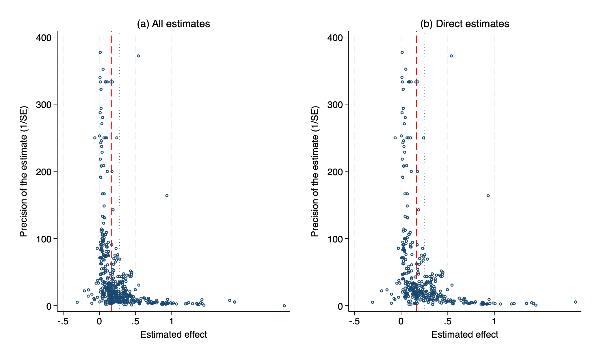

Abstract
Appointing more women to corporate boards is widely expected to also raise firms' environmental, social, and governance (ESG) performance, letting one decision serve two goals. We provide the first meta-analysis of this relationship, drawing on 533 estimates from 106 studies that measure ESG performance with Bloomberg or LSEG ratings. The average reported effect of a one-percentage-point increase in board gender diversity is about 0.28 ESG points, but much of it does not survive scrutiny. Correcting for publication bias with a battery of linear and non-linear methods lowers the effect to between roughly 0.08 and 0.17 points; a best-practice estimate that also imposes sound study design puts it near 0.12 for most of the world, markedly higher for the Middle East, and essentially zero, if anything slightly negative, for the Southeast Asian markets that dominate the Asian evidence. The differences that remain across studies are systematic, driven mainly by geography and by the choice of estimation method rather than by the ESG-rating provider or the controls a study includes. Board gender diversity may be well worth pursuing on its own merits, but the evidence that it reliably raises ESG scores is weaker than the published record suggests.
Fig: A positive effect that shrinks under correction for publication bias, but does not vanish
Reference: Hozova Karolina, Havranek Tomas, Irsova Zuzana (2026), “Do Female Directors Enhance ESG Performance? A Meta-Analysis.” Charles University, Prague. Available at meta-analysis.cz/esg.